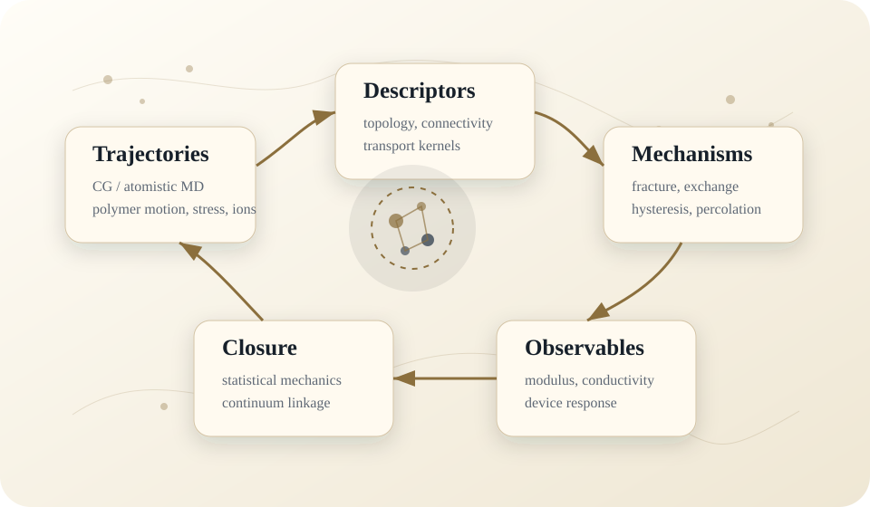

From trajectories to mechanisms
The program treats simulation as an inference instrument: molecular trajectories are reduced into structural motifs, transport kernels, and topology-aware descriptors that can explain macroscopic response without hiding the physical pathway.
The common methodological thread is closure: linking atomistic or coarse-grained observables to continuum-scale mechanics, electrochemistry, or design rules while preserving uncertainty, provenance, and interpretability.
